Última publicación: 00:50:35 · el visor detecta solo los cambios y recarga únicamente lo que cambió. Pulsa una imagen para verla a tamaño completo.
Agua, barcos con reflejo, humo, ciudadanos, animales, banderas, fuente, llamas y haz del faro. 4 s en bucle.
Resolución base 960×540 mostrada ampliada.
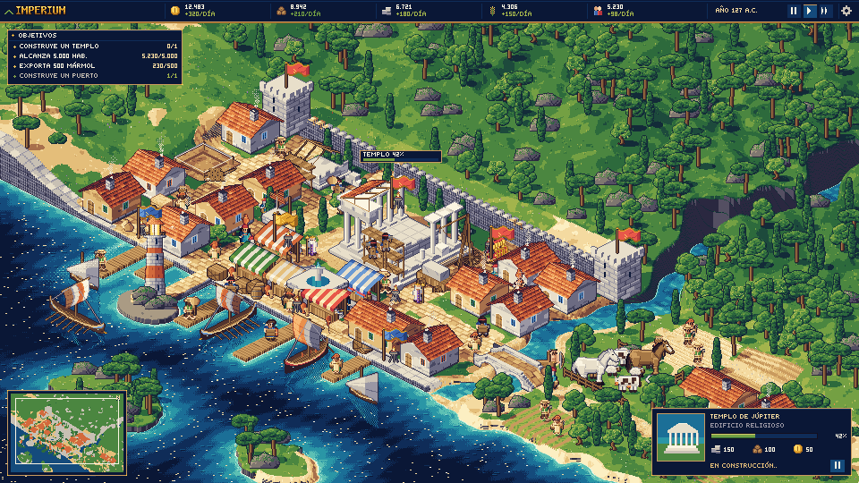
Entregable 2.
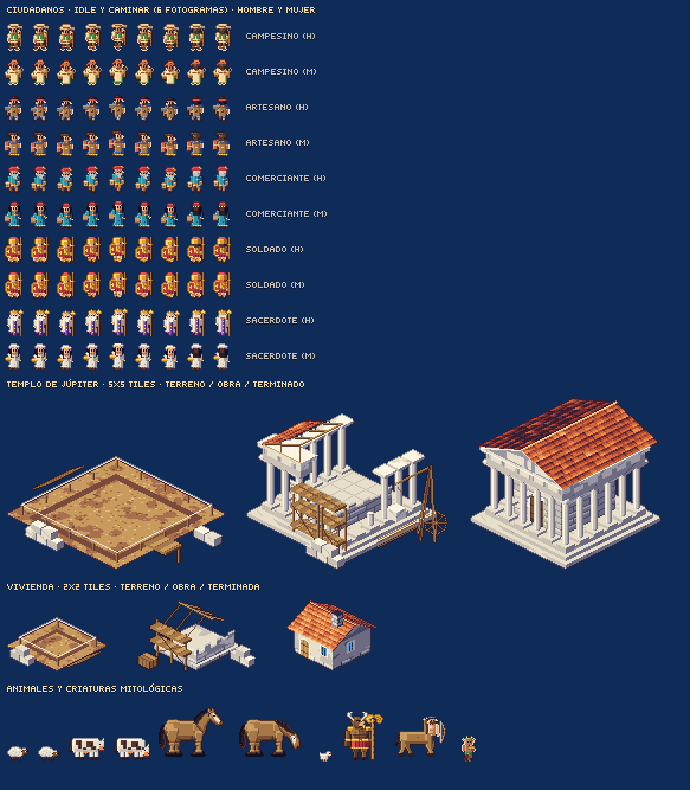
Entregable 3 (hexadecimal en salida/paleta.txt).
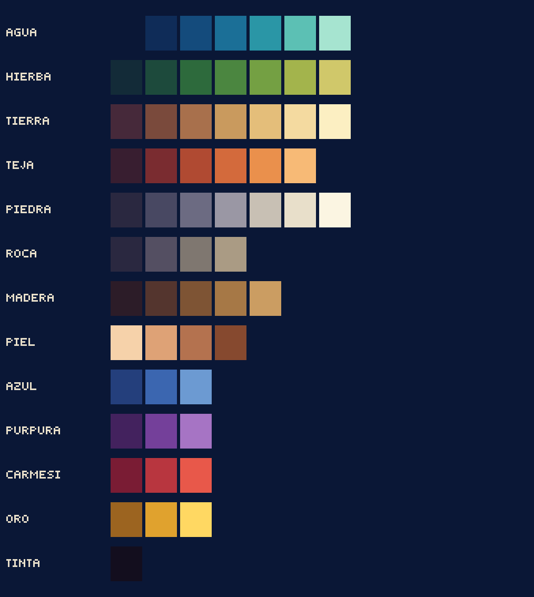
Mismo generador en tres etapas.
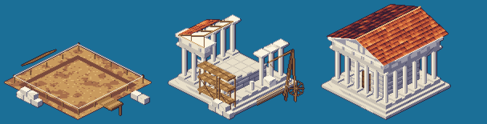
Idle + 6 fotogramas de caminar + de espaldas.
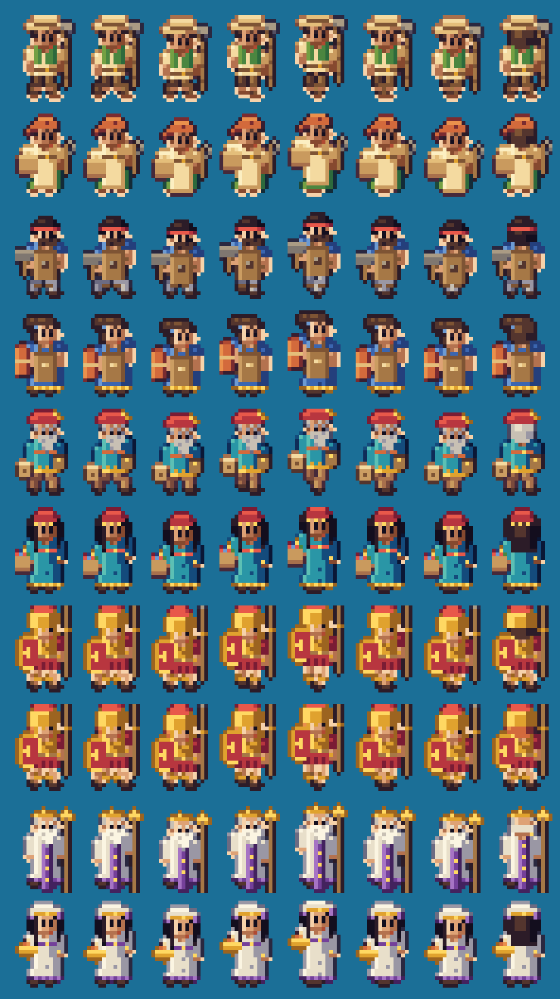
Puestos con toldos, faro con linterna, puente de dos arcos, torre y casa en solar / obra / terminada.
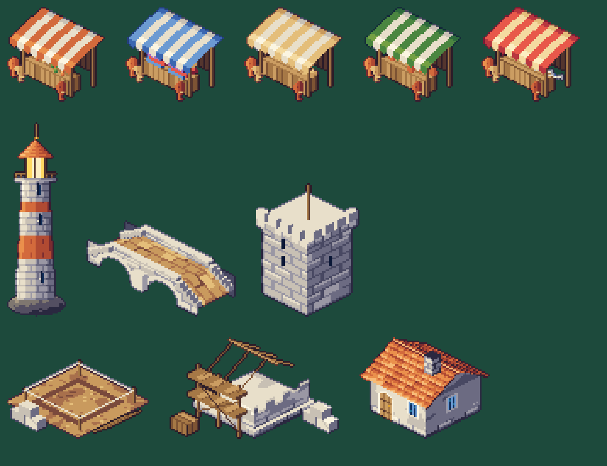
Cajas, barriles, sacos, heno, carretas, pozo, fuente, brasero, valla, estandarte, leña.
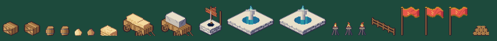
Versión original restaurada a petición del usuario.
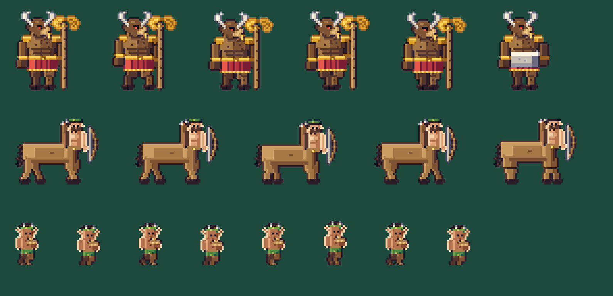
Pastando, caminando y con variantes de pelaje.
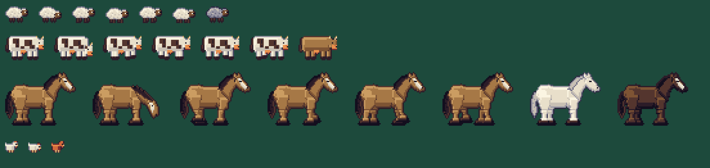
Dos orientaciones isométricas.
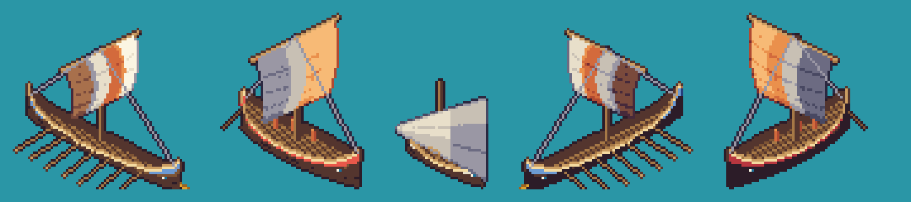
Ciprés, pino parasol, encina, olivo, arbustos y rocas.
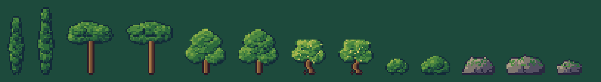
Tejas individuales, estuco con desconchones, postigos.
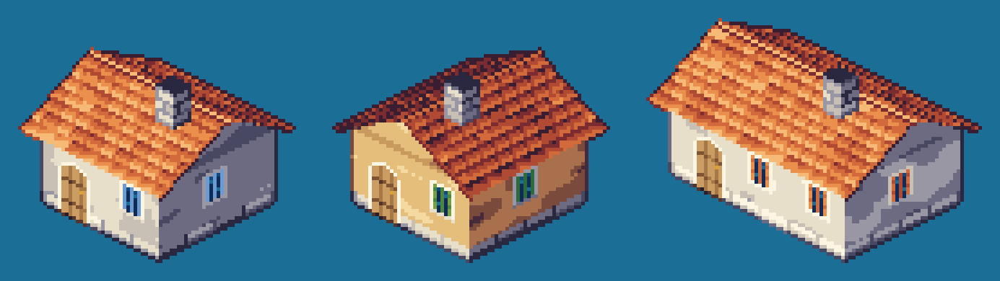